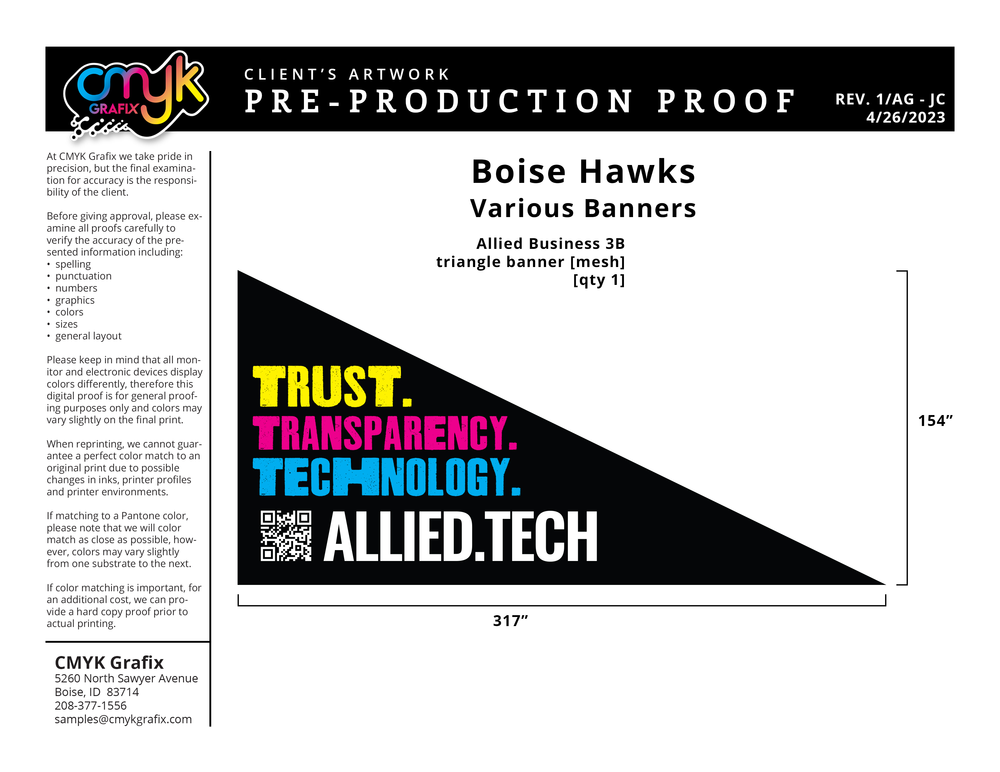
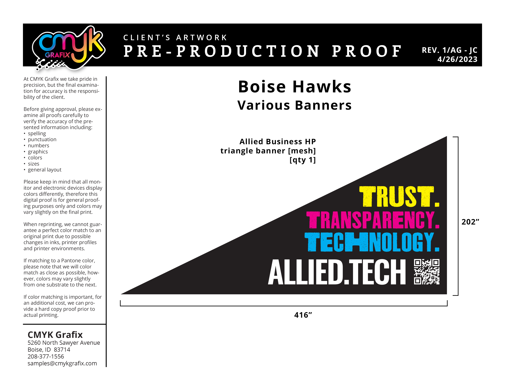

Allied Business Solutions

Overview
Allied Business Solutions commissioned me to adapt an existing banner design for multiple print applications. The project involved resizing the original artwork to a specified format, creating a second flipped version to match an additional proof, and preparing both final designs for print production.
Role
I was responsible for adapting the existing artwork to the client's required specifications and preparing thte final files for production. The specific roles included:
The Challenge
The project required the existing banner design to be accurately adapted to two different dimensions while maintaining the original design's proportions, alignment, and visual consistency. A second version also needed to mirror the original design as closely as possible while accomodating its different dimensions.
The Process and Tools
I began by adapting the existing banner artwork to the first specified size of 317" x 154". I then created a second version based no the provided proof, flipping the original composition while maintaining consistency in the placement and appearance of the existing design elements.
The second version was then resized to 416" x 202", with careful attention given to alignment and proportions so that the flipped design remained visually consistent with the original.

Original proof provided by client.

Example of previous artwork with sizing.

Another example of previous artwork with sizing.
Final Designs
The final project resulted in two completed banner designs prepared according to the client's specifications:
Both designs were exported as print-ready files, with the editable Adobe Illustrator (.ai) files provided to the client for future use.

Version 1

Version 2
The Final Outcome
The completed project provided Allied Business Solutions with two accurately adapted banner designs ready for print production. The project demonstrated my ability to work from existing artwork and production specifications, make precise layout adjustments, create mirrored design variations, and deliver properly prepared files for professional printing.